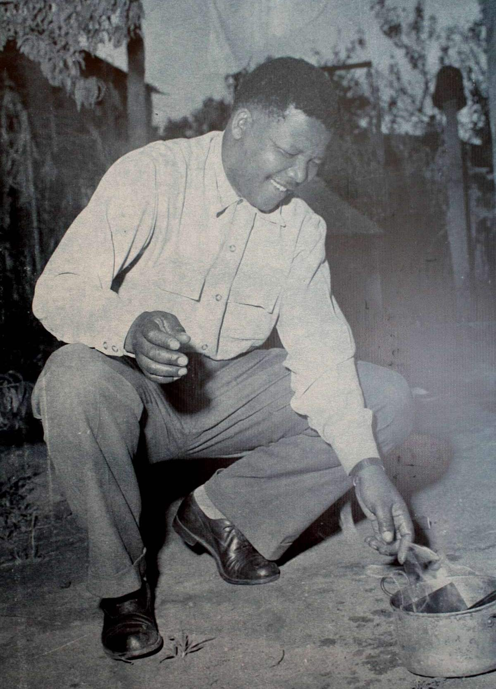
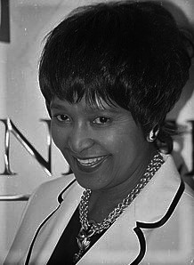
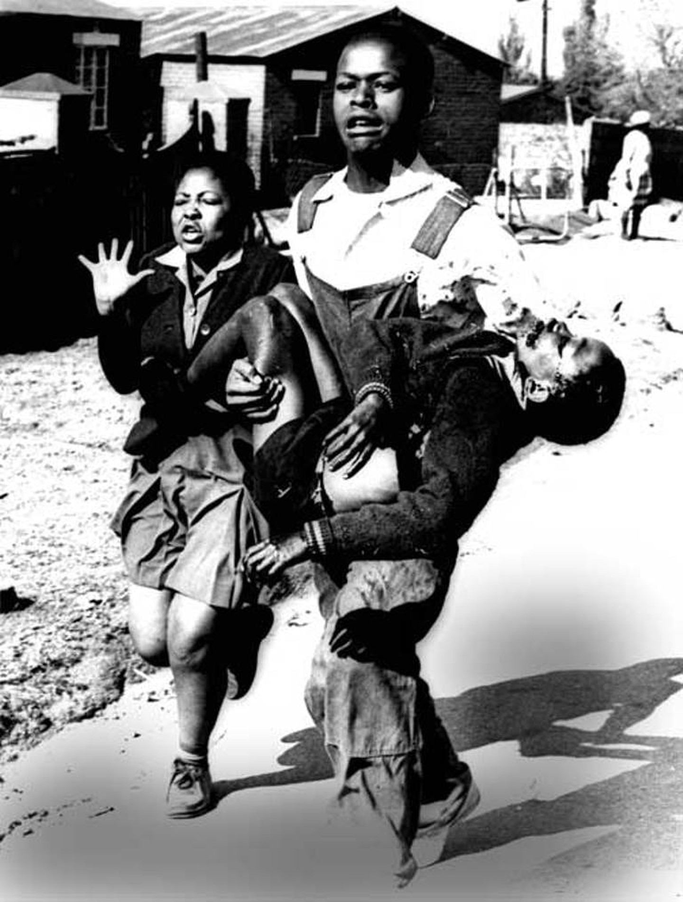
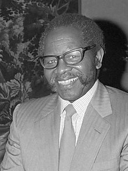
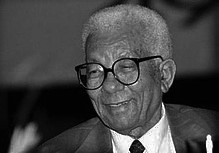
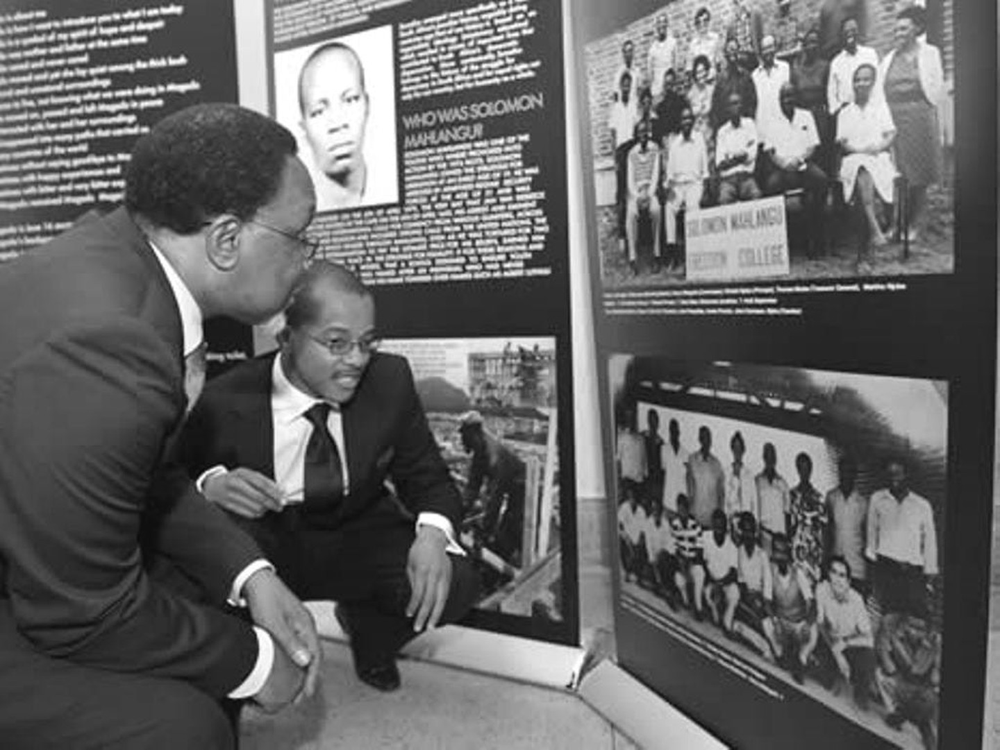
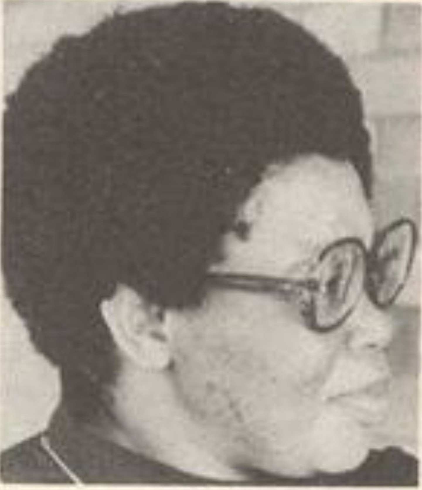

The 27th of April marks Freedom Day in South Africa. Freedom Day is a public holiday in South
Africa and is the
celebration and commemoration of the long struggle for democracy in the country. Freedom Day is
a day of respect and commemoration. Celebrated on the 27th of April each year, Freedom Day
honours the
anniversary of South Africa’s first non-racial election of 1994 and pays homage to the country’s
liberation from Apartheid rule, where the minority exercised prejudice political power over the
majority of the country.
History Of Freedom Day
Freedom Day is celebrated annually on the 27th of April in honour of the auspicious day in 1994 when
the first
non-racial election was held in the country. South Africa celebrates Freedom Day to mark the
liberation of our country
and its people from 300 years of colonialism, White minority domination, politically enforced
prejudice and Apartheid.
Apartheid was officially implemented in South Africa in 1948; however, colonialism and oppression of
the African
majority had plagued various countries throughout the African continent since as early as the
1600s.
Under the brutal Apartheid rule, indigenous people of colour in South Africa were denied the right
to vote and hence did
not have a say in the political governing and running of the country. During Apartheid, the majority
of South Africans
were excluded from any form of political power or influence.
Freedom Day honours those who fought for our country’s liberation, and the many men and women who
suffered through
incarceration, bannings and torture on behalf of the oppressed during Apartheid.
AfricanTravelCanvas.com

Nelson Rolihlahla Mandela
was a South African anti-apartheid revolutionary, political leader and philanthropist who served as President of South Africa from 1994 to 1999. He was the country's first black head of state and the first elected in a fully representative democratic election.

Winnie Mandela
Nomzamo Winifred Zanyiwe Madikizela was a South African anti-apartheid activist and politician, and the second wife of Nelson Mandela. She served as a Member of Parliament from 1994 to 2003, and from 2009 until her death. Madikizela-Mandela was known to her supporters as the "Mother of the Nation".

The image of a dying 12-year-old Hector Pieterson being carried by a crying youth during the Soweto uprising in 1976
shocked the world, and still stands as a stark reminder of South Africa’s apartheid legacy

Oliver Tambo
Oliver Reginald Kaizana Tambo, also known as O.R. Tambo, was a South African anti-apartheid politician and revolutionary who served as President of the ANC from 1967 to 1991. He spent most of this time in exile and was living in different countries trying to build relations with them

Walter Sisulu
Walter Max Ulyate Sisulu was a South African Anti-apartheid activist and member of the ANC, serving at times as Secretary-Genral and Deputy President of the organization. He was incarcerated at Robben Island.
Steve Biko
More than 40 years have passed since Stephen Bantu Biko’s death, his influence on South African history remains
profound, and he stands as one of the most thought-provoking and popular anti-apartheid activists to have fought for the
liberation of the country.
David Webster
With a deep interest in anthropology, Webster first took a stand against apartheid by joining a peaceful
protest against black students’ exclusion from the Rhodes university’s rugby team.

Solomon Mahlangu
“My blood will nourish the tree that will bear the fruits of freedom. Tell my people that I love them. They must
continue the fight.” These are the words that stand on Solomon Mahlangu’s tombstone.
Joe Slovo
was a South African politician, and an opponent of the apartheid system. A Marxist-Lenist, he was a long-time leader and theorist in the South African Communist Party, a leading member of the ANC, and a commander of the military wing Umkhonto we Sizwe

Victoria Mxenge:
Well-known civil-rights lawyers who took up the cases of political freedom fighters across all
political parties, and fought for youths who had been mistreated during imprisonment. As intelligent, well-educated
people they were a great threats by the apartheid government.
Chris Hani
Martin Thembisile Hani, was the leader of the South African Communitst Party and chief of staff of uMkhonto we Sizwe, the armed wing of the ANC. He was a fierce opponent of the apartheid government, and was assasinated by Janusz Walus, during the unrest preceding the transition to democracy.
Robert Sobukwe
Sobukwe was strongly Africanist, believing that the future of South Africa should be in the hands of Black
South Africans. Sobukwe was
instrumental in initiating an Africant breakaway from the ANC in 1958, which led to the birth of the Pan Africanist
Congress (PAC).